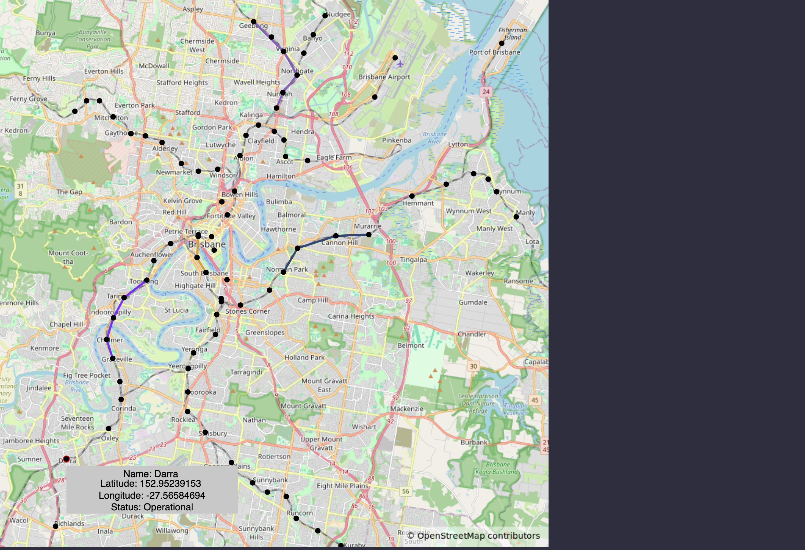
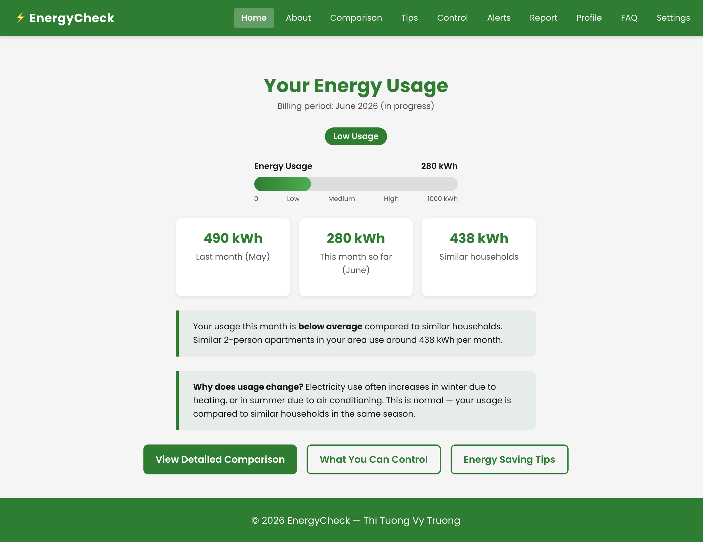
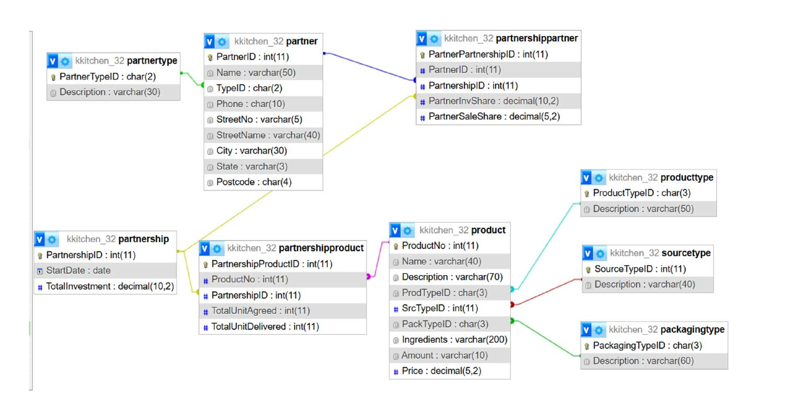
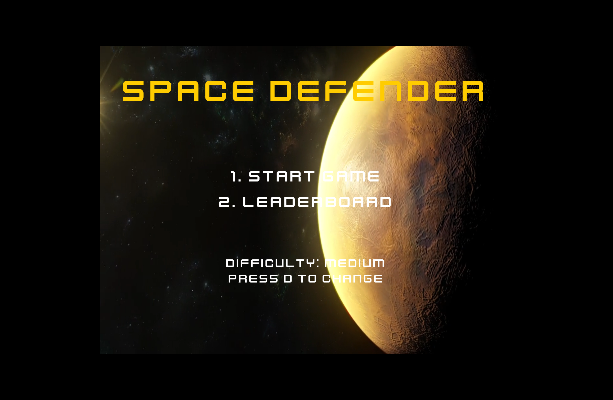

Second-year at Griffith University, Brisbane. I build things in JavaScript, SQL and Python, and I'm looking for an internship or student-friendly role where I can keep learning by shipping real work.
I'm currently in my second year of a Bachelor of Information Technology (Software Development) at Griffith University in Brisbane, graduating late 2027. Most of what I know so far comes from building — turning coursework into real, working projects rather than just finishing assignments.
I've picked up hands-on experience with JavaScript applications, SQL and database design, and data visualisation through university projects, and I'm actively looking for an internship, Work Integrated Learning placement, or student-friendly role in software, QA, data, or IT support.
Outside of code, I work casual hospitality shifts and go to as many Brisbane tech meetups as I can fit in — I write about what I learn (and what confuses me) on LinkedIn afterwards.

An interactive map built from real Queensland railway station data (GeoJSON), with hover tooltips showing station name, coordinates and operational status. Multiple train routes render in distinct colours with geographically accurate coordinate scaling over a real background map.

A 10-page responsive website for Australian renters, built with a team of five through the full Design Thinking process — from empathy research to user testing. I built the shared stylesheet using CSS custom properties, a responsive grid, and dark mode support.

Designed and built a MySQL database for a beverage supply network based in Kakadu National Park — modelling partners, products, and multi-partner partnerships across sourcing, packaging and sales share. Wrote 8 analytical SQL queries using joins, aggregations and subqueries to answer real business questions, like each partner's revenue split and undelivered stock.
View code ↗
A browser-based game with four scenes, sprite collision detection, keyboard controls, sound, video, GUI text input, and a JSON-driven leaderboard to manage user interaction and game state.
Kept kitchen and floor operations running smoothly during high-volume service — the same attention to detail and composure under pressure I bring to debugging on a deadline.
Handle POS transactions accurately in a fast-paced, high-volume environment — comfortable with detail-heavy work under time pressure.
Tutored students 1:1, adapting explanations to how each person learns best — the same instinct I use when explaining code to someone new to it.
Griffith University, Brisbane
Applying with intent — targeting internship, WIL and graduate roles in software, data and QA, and tailoring each application instead of mass-applying.
Going to meetups — regularly attending Brisbane tech events like GDG Brisbane, Queensland AI and Databricks community meetups to learn and build connections.
Writing as I go — sharing what I'm learning on LinkedIn after each event, in my own words rather than recycled talking points.
Still building — right now: learning Java and Power BI. Nov–Feb: open for full-time internship or placement work.
I'm actively looking for internship, WIL or student-friendly technical roles in Brisbane. If you're hiring, or just want to talk software, I'd love to hear from you.